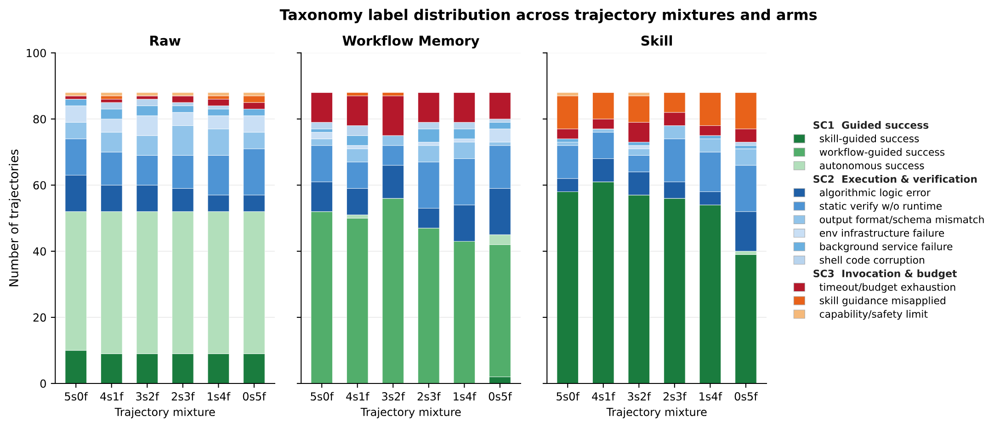
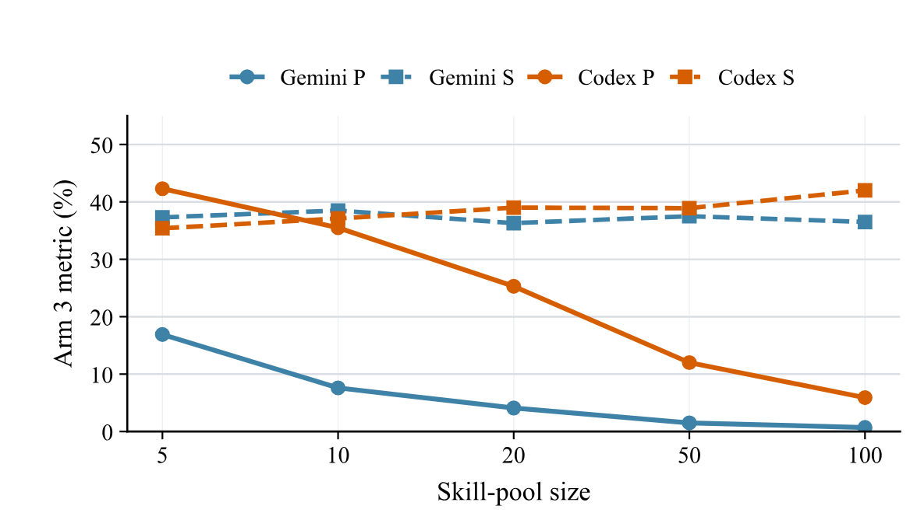

Demystifying Agent Skills: Procedural Anchoring, Retrieval Decay, and Failure Modes
TL;DR
- "Demystifying Agent Skills: Why They Work—Until They Don't" (arXiv 2608.14036; Zhiyuan Jiang, Fangrui Huang, …, Mengdi Wang, Shilong Liu, Yijiang Li — Princeton/Stanford/USC/JHU/UCSD) runs the first lifecycle-level attribution study of SKILL.md-style agent skills: 8,135 normalized trial records across Terminal-Bench 2.0/Pro and SkillsBench, open-coded into a 12-mode taxonomy (human-validated at κ = 0.952).
- The headline mechanism finding inverts the folk theory: skills mostly work as procedural anchors — a usable procedure, ordering, checklist, or verification plan — accounting for 65.7% of cases where a skill helps, while explicit knowledge injection accounts for just 4.5%. Skills stabilize execution; they rarely supply facts the model lacks.
- Representation beats content: skills distilled from the same trajectories beat Workflow Memory by +6.06 points (the only paired delta whose bootstrap CI excludes zero), and beat it on tokens-per-success too. But skills add a new failure surface (guidance misapplied: 0.8% → 10.0% of trajectories), and as pools grow 5 → 100, actual-use retrieval precision collapses 29.6% → 3.3% — while downstream success barely moves.
Why this matters
Skills have quietly become the default self-improvement substrate for frozen agents — this tracker alone holds a dozen systems that mine trajectories into SKILL.md packages (MSCE, SkillHone, HiSME, SkillRise, skill self-play…). Almost all of them justify the machinery with aggregate success rates, which tells you that skills helped, not why, and gives you no idea which part of the pipeline — representation, annotation, retrieval, invocation — will break first as libraries grow. This paper is the missing measurement layer: it holds source experience fixed and varies one lifecycle stage at a time.
The two results with immediate design consequences: (1) if skills are procedural anchors rather than knowledge stores, then skill writing should optimize for executable ordering, preconditions, and verification steps, not for encyclopedic content — and knowledge-heavy skill formats are mostly wasted tokens; (2) the retrieval story everyone worries about ("what happens at 100 skills?") turns out to be simultaneously worse and less alarming than expected — precision genuinely collapses, but agents route around it, inspecting many candidates and extracting partial procedural support from related-but-wrong skills. Exact ground-truth invocation "is neither sufficient nor necessary for success."
The core idea
Treat skill use as a pipeline and instrument every stage. From raw runs on three terminal benchmarks (Harbor workflow, 5 trials/task), the authors build matched arms per task: Raw (no prior experience), Workflow Memory (cleaned procedural traces appended to the instruction), and Skill (the same trajectories distilled into a standardized SKILL.md placed in the environment, per the standard agent-skill protocol). A composition grid from 5-successes-0-failures (5s0f) to 0s5f varies evidence quality; a no-hint variant withholds success/failure annotations; a transfer condition moves Codex-built artifacts into Gemini CLI; and a retrieval study scales SkillsBench pools from 5 to 100 skills with random/similar/dissimilar distractors.
Attribution is contrastive: 528 (raw, workflow, skill) triples on identical tasks are labeled by an LLM judge against a taxonomy induced by open coding 240 stratified trajectories (238 unique labels → 12 canonical modes in 3 categories), with a human independently re-mapping all 238 labels (95.8% exact agreement, Cohen's κ = 0.952).
The paper's only formal metrics are the retrieval definitions (Appendix A.7):
where \(G_t\) is the task's ground-truth skill set (SkillsBench's native annotations) and \(\widehat{G}_i\) the set of distinct skills the agent selected — or, for "actual-use" precision, the skills a parser finds it actually inspected/invoked in the trajectory. These aggregate as
with empty predictions scored zero. Task success is simply the mean binary verifier outcome.
How it works
# Attribution protocol (per benchmark: TB-2.0, TB-Pro, SkillsBench)
run Raw arm: n=5 trials/task in fixed Docker envs; keep tasks with
both successes and failures
for mixture m in {5s0f, 4s1f, 3s2f, 2s3f, 1s4f, 0s5f}:
WM(m) ← clean + structure the m source traces; append to instruction
Skill(m) ← distill SAME traces via skill-creator prompt → SKILL.md
(variants: with vs without success/failure annotations)
re-run tasks under Raw / WM / Skill; log verifier reward, transcript, tokens
normalize → 8,135 trial records (task, arm, outcome, artifact, transcript)
# taxonomy induction
sample 240 trajectories stratified by benchmark×setting×arm×outcome
open-code each with an LLM judge (strict JSON, evidence spans) → 238 labels
batch-merge labels → 12 canonical modes in 3 categories (SC1/SC2/SC3)
human validates: 714 grounding checks + independent 238-label remap (κ=0.952)
# contrastive analysis
build 528 (raw, WM, skill) triples on identical tasks
LLM judge assigns per-arm mode + pairwise fixed/introduced deltas
aggregate deterministically: success rates, 1,000-iter bootstrap CIs,
mechanism distribution (procedural_anchor, knowledge_injection, ...)
The 12 modes split into three categories: SC1 guided/autonomous success, SC2 execution-layer failures (infrastructure, format mismatches, shell corruption, algorithmic errors, static-verification-without-runtime), SC3 invocation and boundary failures (timeout/budget exhaustion, guidance misapplied, capability limits).

Figure 2 from the paper: stacked trajectory-level labels for Raw, Workflow Memory, and Skill arms across source mixtures 5s0f → 0s5f. Skills shrink the blue execution-failure block but introduce the orange "guidance misapplied" band; Workflow Memory's signature failure is the dark-red timeout block.
Results
Mechanism. Where a skill helps, it's a procedural anchor 65.7% of the time; explicit knowledge injection is 4.5% (the remainder spreads across failure-warnings, unused, and counterproductive artifacts, not broken out numerically). In the mode taxonomy, skills convert raw's autonomous-success (48.7%) into skill-guided success (61.6%) and cut execution-layer failures' share from 37.3% (raw) to 23.5% — infrastructure failures nearly vanish (5.3% → 0.2%). But algorithmic logic errors (8.3% → 7.4%) and static-verification-without-runtime (12.5% → 11.7%) barely move: skills don't fix wrong algorithms or lazy verification. And a new mode appears almost from nothing: skill_guidance_misapplied_or_ignored, 0.8% → 10.0% — plausible guidance applied mechanically with a missed precondition or stale assumption.
Representation. On the 528 paired triples: Skill 61.9% vs Raw 59.1% vs Workflow Memory 55.9%. Bootstrap deltas: Skill−WM +6.06 pts, CI [+0.76, +11.36] — the only interval excluding zero; WM−Raw is negative (−3.2, n.s.). Against compact baselines on 26 TB-2 tasks: Skill 79.2% vs WM 62.3%, test-first template 59.2%, short plan 47.7%, raw 50.0% — so it isn't "any compact procedural hint." Token-matched (83 tasks): skills beat raw by +5.5 pts while saving 34K tokens/task; they beat WM by +4.8 pts at +95K tokens. WM's verbose traces also produce its signature failure: timeout/budget exhaustion at 10.6% of trajectories vs 4.4% (skill) and 1.7% (raw).
Evidence quality. Success/failure annotations matter exactly when failures are in the pool: at 3s2f, Gemini TB-2 drops 0.746 → 0.400 without them; and failure-only (0s5f) skills routinely land below the raw baseline — bad evidence makes actively harmful skills.
Retrieval decay. Scaling SkillsBench pools 5 → 100: embedding retrieval (Qwen3-Embedding-0.6B) degrades gently (88.3% → 76.9% top-1), agent selection degrades more (70.0% → 63.7%, and to 31.9% for Codex under similar distractors), but actual-use precision in real executions collapses 29.6% → 3.3% averaged over pairings (Gemini 16.9 → 0.7; Codex 42.3 → 5.9). Downstream success stays flat at 36.4% → 39.3% — Codex's success actually rises to 42.0% at pool size 100. Recall stays high (54–74%): agents inspect lots of candidates, find the right one among them, but don't restrict use to it, and related non-ground-truth skills still contribute partial procedural support.

Figure 3(b) from the paper: parsed skill-use precision (solid) collapses with pool size for both Codex and Gemini pairings while downstream success (dashed) stays flat or rises.
How it connects
- When Skills Hurt: Attributing 307 Agent Failures to Loaded Skills (Microsoft) — the two papers are complementary halves of skill epidemiology: that one prices bad skills in a deployed library; this one establishes the mechanism taxonomy and shows where in the lifecycle harm enters (0s5f pools, misapplied guidance).
- MSCE: Converting Agent Memory into Executable Skills — MSCE's evidence-gated crystallization is exactly the countermeasure this paper's 0s5f result demands: don't distill from unvetted failure-heavy evidence.
- Rethinking Self-Evolving Agent Skills and HiSME — both optimize the skill-evolution loop; this paper supplies the dependent variable those loops should target (procedural-anchor quality and precondition correctness, not knowledge coverage).
- Stealing SKILL.md — jointly, an interesting tension: skills are valuable enough to steal, yet their value is mostly procedural anchoring, which is also what makes them semantically paraphrasable — consistent with that paper's finding that translation attacks preserve skill utility.
- Agentic Context Management and the ACE playbook line — workflow-memory-style accumulation loses to distilled skills here at matched content, which is evidence for the "curate into structured artifacts" side of the context-engineering debate.
Critical take
The measurement machinery is the contribution, and it's genuinely careful (matched-source arms, bootstrap CIs, human κ = 0.952 on the taxonomy) — but the load-bearing attribution judgments are still LLM-made: all 528 triples were labeled by Claude Sonnet 4.6 seeing truncated transcript excerpts (4K head + 8K tail), with humans validating label grounding, not re-adjudicating every triple. Truncation plausibly undercounts mid-trajectory mechanisms. Scope is three terminal-style benchmarks and two harnesses, so "skills = procedural anchors" may partly reflect that terminal tasks are procedure-shaped; a knowledge-heavy domain could shift the 65.7/4.5 split substantially. The RQ4 study also had to swap models mid-stream (GPT-5.3-Codex became unavailable, replaced with GPT-5.4), making retrieval results within-pairing only, and the cross-framework transfer result (RQ3) exists only as a figure with no numbers in the text. Finally, the flat-success-under-precision-collapse finding cuts both ways: it rescues large skill libraries from the retrieval doom narrative, but it also means the field's implicit metric — did the agent invoke the right skill? — measures almost nothing. That's the finding I'd bet ages best: skill routing metrics need to be replaced by skill effect metrics, which is precisely the contrastive methodology this paper prototypes.
If you remember three things
- Skills are execution stabilizers, not knowledge stores: procedural anchoring explains 65.7% of skill benefit, knowledge injection 4.5% — so write skills as ordered procedures with preconditions and verification steps, and spend zero tokens on encyclopedia.
- Representation is worth +6.06 points by itself: the same trajectories packaged as SKILL.md beat workflow-memory injection (the only CI excluding zero), while raw workflow memory trends below no-memory and times out 6× more often — and skills built from failure-only evidence drop below baseline entirely.
- Retrieval precision is a misleading health metric: actual-use precision collapses 29.6% → 3.3% as pools grow 5 → 100 while success stays flat, because exact ground-truth skill invocation is neither sufficient nor necessary — measure skill effects contrastively, not skill routing.